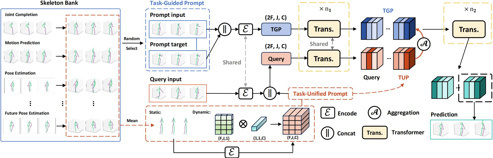
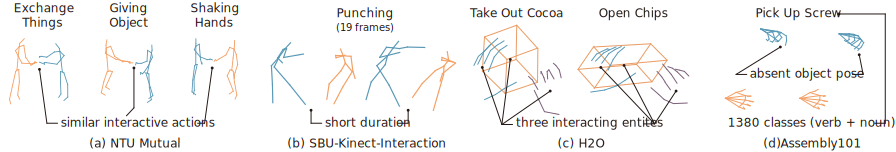

Skeleton-in-Context

Overall framework of our Skeleton-in-Context. Specifically, we establish a skeleton bank by integrating training sets under different tasks, which contain a large amount of input-target pairs performing different tasks.
Next, we randomly select a sample pair as the task-guided prompt (TGP) and a query input from the skeleton bank, undergo encoding, and concatenating, respectively, and then input them into the transformer in parallel.
In particular, during this process, the query input and task-unified prompt (TUP) are combined to form a new query. After iterating n1 times, the TGP and query are aggregated through aggregation function and then input into the transformer for n2 iterations.
Lastly, the second half of the model output is used as our prediction.
Features
In-context learning for unifying skeleton sequence modeling
- The first work to explore the application of in-context learning in skeleton sequences.
- A new framework for tackling multiple tasks (four tasks), which outperforms other multi-task-capable models.
- Skeleton-in-Context solves the overfitting problem that is encountered when using the masked-modeling-style training framework of existing methods.
- A new multi-task benchmark for evaluating the capability of processing multiple skeleton-based tasks, including motion prediction, pose estimation, joint completion, and future pose estimation.
- Surpasses other multi-task-capable models re-structured from multi-stage models or task-specific models.
- Surpasses even task-specific models (siMLPe, EqMotion, STCFormer, GLA-GCN, MotionBERT) on some tasks.
- Skeleton-in-Context can generalize to new datasets well, and perform unseen tasks when given customized prompts.
Benchmark Difficulty
Visualizations